포트폴리오.zip(436MB) 안에 있던 실제 결과물 자료를 다 열어봤습니다. 결론부터 말씀드리면 — 지금 포트폴리오에 담긴 것보다 훨씬 강력한 근거 자료가 이미 있으세요. 특히 정부지원 창업공모전 2건(청바지 · AI EduMentor), 청소년 마인드맵 축제 현장 사진, 키플레이스 실물 홍보물, 캐나다 프라이드 축제 자원봉사 — 이건 반드시 넣어야 합니다. 아래는 실물 근거 자료로 새로 만들 수 있는 프로젝트 카드들, 그리고 사실관계 정리입니다.
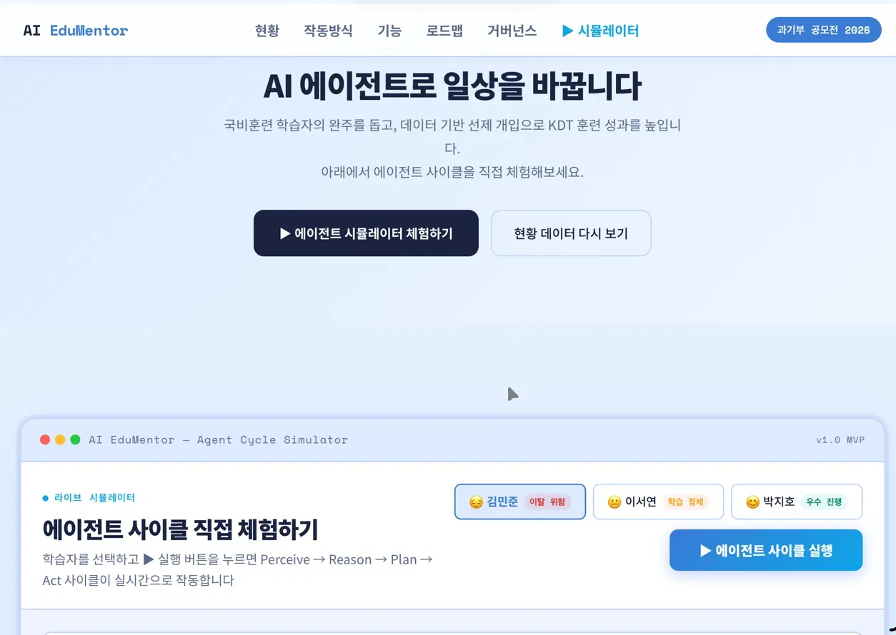
K-Digital Training(KDT) 중도이탈률(연 8~20%) 문제를 해결하는 AI 학습 멘토 플랫폼 기획·제안서 제출. 정책·데이터 근거 조사부터 MVP 설계, 이탈 위험 스코어링, 코치 에스컬레이션 흐름까지 정리한 문서. 백오피스 담당자의 정책·데이터 이해력을 보여주는 최고의 근거.
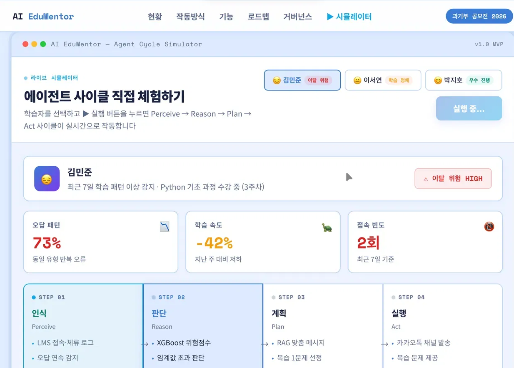
65세 이상 시니어의 복지·활동·관계 통합 플랫폼 기획. 통계청·OECD·복지부 공공데이터 기반 문제 정의부터 MVP 개발계획서·AC투자 기획서·서비스 구현 실행계획서·소개 영상까지 기획 문서 4종 + 홍보 영상 5편 실물 존재. 정부 지원사업 실무 경험(원라인 시절)이 확장된 결과물.
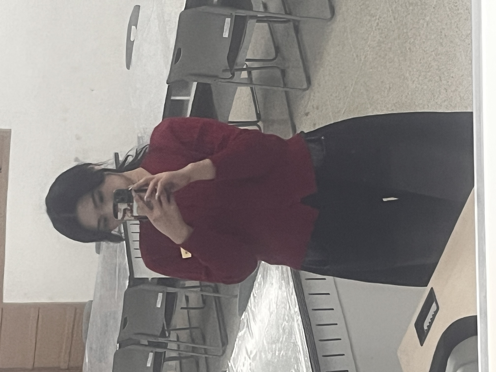
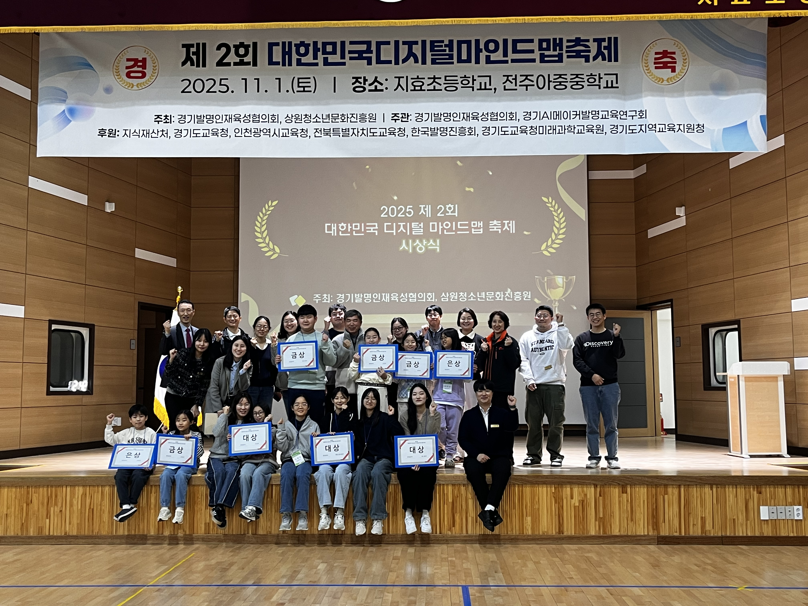
EVIDENCE ✓실물 사진 6장 확인. "총괄 운영"이라는 표현이 실제 근거로 뒷받침됨. 다만 이력서에도 "2개 지역"이라는 수치는 없어요 — 실제 몇 회차인지 확인해서 정확한 수치로 교체 필요.
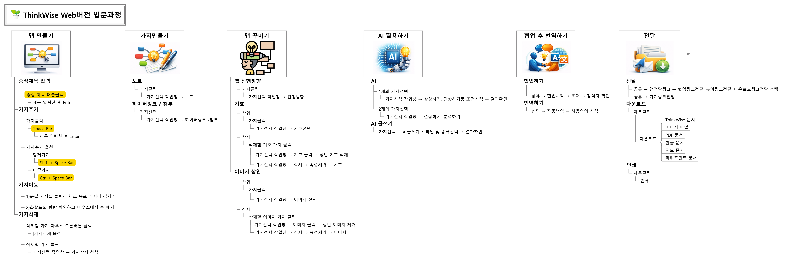
실제 강의 후기(4/29 · 5/19 · 6/24 · 7/15 · 7/31 · 9/11 · 9/23 · 1/15 · 1/22 · 2/5 · 3/26 등 11회 이상의 정기 교육 차수 실물 근거), 커리큘럼 문서, AI 자기소개서 과정 개발안, 배포 자료까지 다 확인. 지금 포트폴리오의 "13+ 차수"는 대략 맞는 수치지만, 확인 후 정확히 잡을 필요.
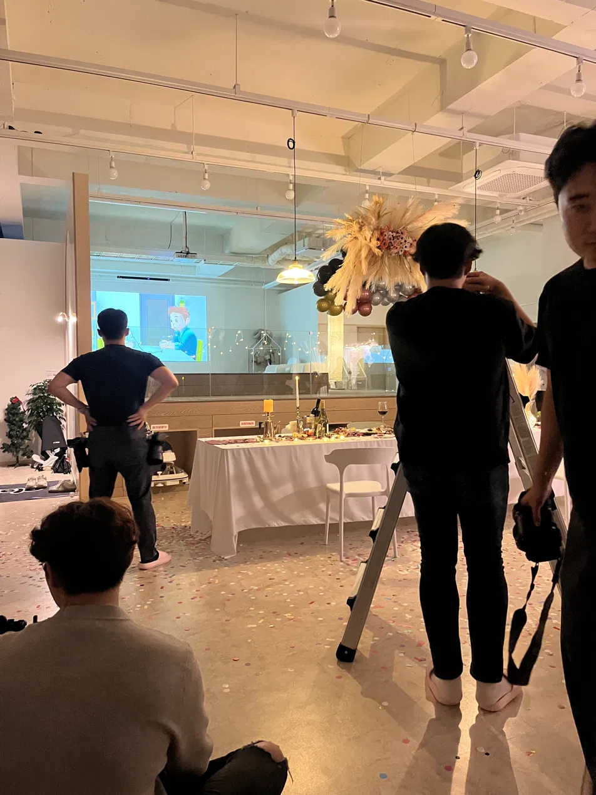
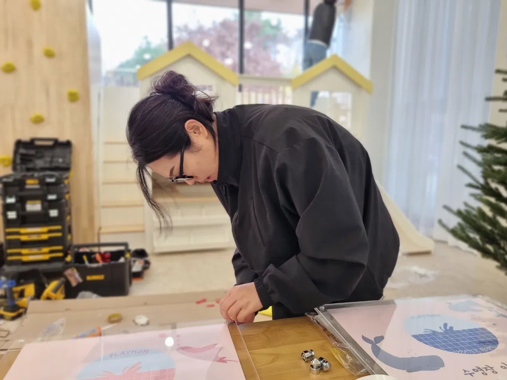
EVIDENCE ✓실물 홍보 사진·오픈지점 바이저 업무 사진 존재. cs.txt에서 "아이들 피부트러블·다쳤을 경우" 항목 확인 → 아동·키즈 놀이공간 프랜차이즈임이 명확. 지금 포트폴리오는 "매장"이라고만 하고 있어 업종 특성이 드러나지 않아요. "아동 놀이공간 55개 매장" 정도로 구체화 권장.
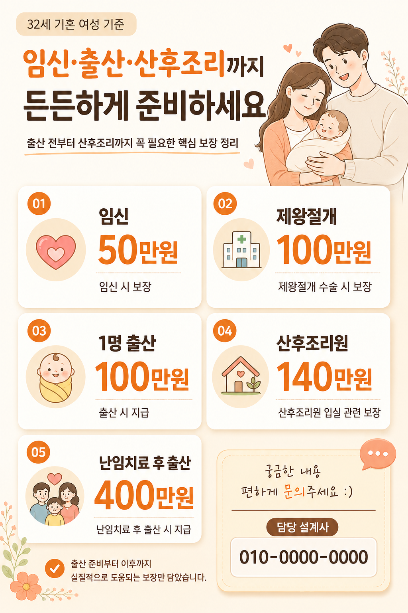
실제 강의 교안(md 파일), 학생 후기 13명 이상 코멘트, 실제 실습 결과물(카드뉴스·PPT·프로필 이미지·프롬프트 예시집) 실물 존재. "AI 활용" 강점의 가장 강력한 실물 근거. 할루시네이션 방지 프롬프트, 이미지 가공용 프롬프트 등 커리큘럼 문서까지 완비.
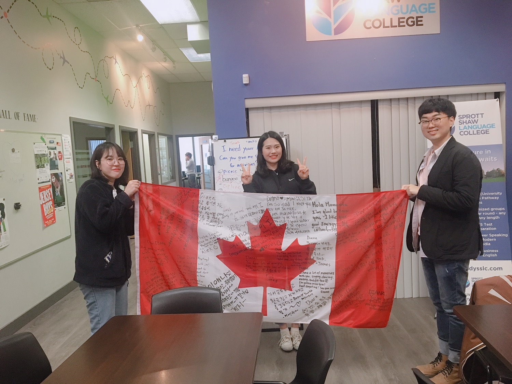
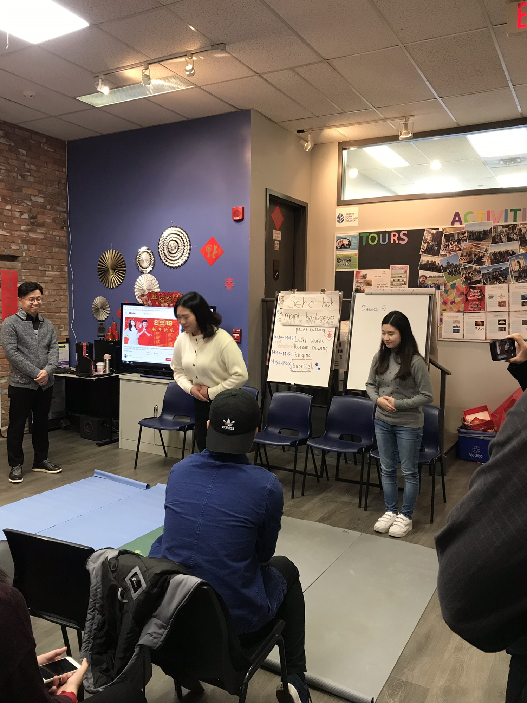
EVIDENCE ✓SSCL 토론토 + SSLC 빅토리아 두 도시 어학원 수료, 토론토 프라이드 축제 자원봉사자 참여 실물 근거. 지금 포트폴리오의 "문화 배우고 성장" 서술보다 훨씬 능동적인 스토리로 다시 쓸 수 있음.
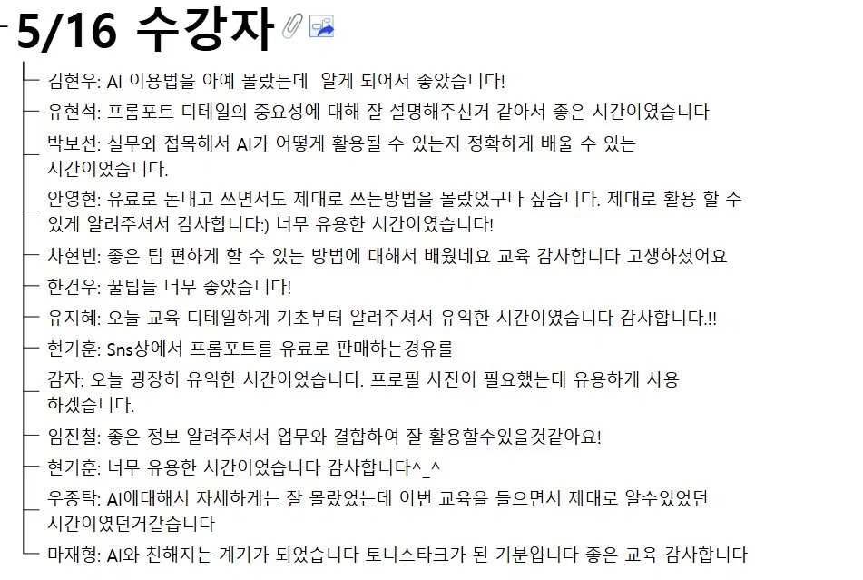
"AI 이용법을 아예 몰랐는데 알게 되어서 좋았습니다", "실무와 접목해서 정확하게 배울 수 있는 시간", "토니스타크가 된 기분입니다" 등 실제 수강생 코멘트 다수. 자기소개서·포트폴리오 곳곳에 실물 인용으로 활용 가능.
| 항목 | 확정 사항 |
|---|---|
| 심테크시스템 | "2024.09 — 현재 · 재직 중" → "2024.09 — 2026.04 · 1년 8개월 · 퇴사" ✓ 확정 |
| Hero "2026 새로운 기회를 찾고 있습니다" | 유지 OK (퇴사자 상태와 일치). "현재 재직 중" 표기만 삭제. |
| 키플레이스 매뉴얼 "15종+" | 실물 파일 확인: 네이버 스마트 플레이스, 오픈바이저 업무, 점주 교육, CS, 예약창, 필수비품, 통신판매업 등 실제 문서 20종+ 존재. "15종+" 수치는 오히려 보수적인 표현 — 유지해도 무방. 다만 "다수의 점주용 운영 매뉴얼"로 순화하는 것도 안전. |
| 청소년 마인드맵 "2개 지역" | 원본 이력서에 지역 수치 없음. 사진만 있고 실제 몇 회차인지 미확인. 사용자님께 정확한 수치 확인 필요 — 확인 안 되면 "지역 청소년 대상 마인드맵 축제 총괄"로 단순화. |
| 정기 교육 "13+ 차수" | 강사 후기 md 파일에 실제 11회 차수 확인됨(2024.4~2026.3). "13+"는 약간 과장 가능성 → "10회 이상 정기 교육 운영"이 안전. |
| "포드 서비스 엑설런스 전국 상위 5인 본선 진출" | 원본 이력서에는 "수상 경험"까지만. 자료 zip에도 관련 자료 없음. 사용자님께 실제 여부 확인 필요. 확인 안 되면 "포드/링컨 서비스 엑설런스 프로그램 수상"으로 단순화 권장. |
| 이력서에 없는 새 항목들 |
➕ 정부 공모전 참여 2건 (청바지 · AI EduMentor) — 강력한 신규 카드 ➕ 캐나다 프라이드 축제 자원봉사 — abroad 섹션 재작성 ➕ AI 실무교육 커리큘럼 실물 — 별도 서브카드 |
data/portfolio.js 전면 재작성 + resume.html은 원본 자소서 4항목을 살리되 문장만 자신감 있는 톤으로 다듬기